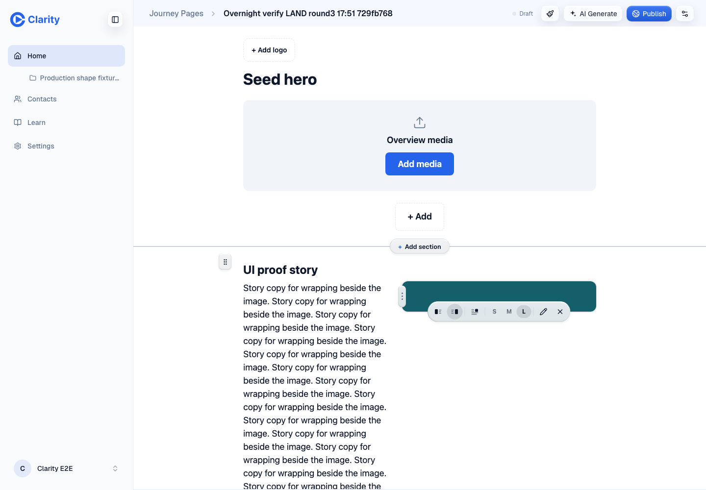

| Check | Result | Evidence |
|---|---|---|
| Preview identity | PASS | Authenticated preview serves the assigned head. browser-round3/doctor.txt |
| Install and gates | PASS | Frozen install, typecheck, root tests, build, lint, LOC ratchet, guards and diff check. 4,713 tests pass; one is skipped. gates-round3.json |
| Only the grip changed since round 2 | PASS | JourneyMediaResizer.tsx only, three added lines and two removed lines. identity-round3.json |
| Grip centering, both sides | PASS | Zero midpoint offset at 60, 100, 200 and 400px. All eight grips visibly revealed. browser-round3/geometry-visible/settled-height-sweep.json |
| Toolbar clearance | PASS | All 576 toolbar probes pass. Both resize handles remain reachable at every measured height. geometry-summary-round3.json |
| Short-image Left/Right replay | PASS | Eight pointer and keyboard edits survive real saves, reloads, API and rendered-state assertions. browser-round3/results.json |
| Drag resize persistence | PASS | Pointer drag stores 55%; reload shows the 55% column width. browser-round3/pointer-drag-resize-save-reload.json |
| Adjacent regressions | PASS | Hero title, story body, CTA add/remove, canvas add and section drag save and reload. browser-round3/results.json |
| Full diff and artifact review | PASS | Independent review finds no new issue in the 79-file diff. Screenshots and measurement assertions reviewed. diff-audit-round3.md |
| Fixture cleanup | PASS | All three created pages and all three uploaded images return 404 after deletion. cleanup-round3.json |
| Lint advisory | WARN | Lint exits 0. React Doctor retains its round-2 advisory in unchanged workspace-library-selection.test.tsx:34. lint-round3.log |
| Navigation request | WARN | One folder request was aborted during navigation. Later requests return 200. No console or page errors. browser-round3/errors.json |
| Broader round-2 checklist | REUSED | Unchanged media/story and gallery/summary evidence is reused under the round-3 brief, not rerun in full. ../land-round2/VERDICT.md |
All screenshots use https://pr-1042.clarity-video.workers.dev. Test pages were deleted after verification.



No console or page errors. One GET /api/tree/folders was aborted during navigation; later requests returned 200. The main acceptance run recorded 20 successful PUT requests. Every saved mutation was followed by reload and an API read. The focused height sweep uses browser CSS to set image heights. Broader round-2 checks are reused rather than claimed as fresh runs. No publishing or production test ran.